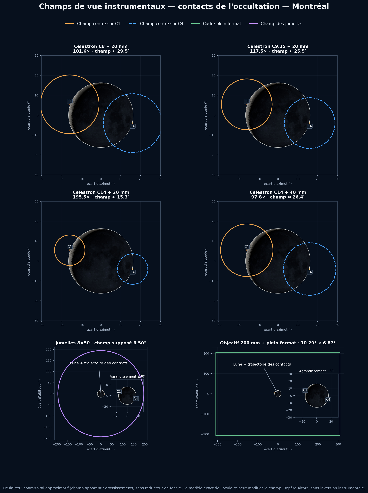

8 septembre 2026 · Montréal · heures avancées de l’Est
La Lune occulte Jupiter en plein jour
À Montréal, Jupiter touche le limbe lunaire à 14:50:07. Une minute plus tard, à 14:51:09, son disque est entièrement caché. La planète reste derrière la Lune pendant 58 min 37 s, puis réapparaît entre 15:49:46 et 15:50:42.
Le rapprochement est maximal à 15:20:59. Jupiter se trouve alors à 28.2° de hauteur, tandis que le Soleil est encore à 38.5°. La Lune glisse devant Jupiter parce que son mouvement apparent, beaucoup plus rapide que celui de la planète, la fait traverser la même ligne de visée depuis Montréal.
C1–C2 : le disque de Jupiter disparaît progressivement derrière le bord lunaire.
C2–C3 : Jupiter est entièrement occultée.
C3–C4 : Jupiter réapparaît de l'autre côté de la Lune.
Observation difficile et précaution essentielle : le phénomène se déroule en plein jour, assez près du Soleil. Ne dirigez jamais des jumelles ou un télescope vers cette région sans méthode de pointage sûre et supervision expérimentée.
Quel champ de vue pour observer les contacts?
Les cercles orange et bleu représentent le champ disponible lorsque l'instrument est pointé respectivement sur C1 et C4. Avec les C8, C9.25 et C14, le champ est plus petit que le diamètre apparent de la Lune : il faut viser le limbe du contact plutôt que centrer le disque lunaire.

Les jumelles 8×50, supposées ici offrir 6,5°, montrent facilement la Lune et l'ensemble du déplacement. Le 200 mm sur plein format couvre 10,29° × 6,87°. Les oculaires sont calculés avec 50° de champ apparent à 20 mm et 43° à 40 mm; le modèle exact peut modifier ces valeurs.
Heures HAE (UTC−4). Cliquez sur une ville pour déployer son triptyque.
| Ville | C1 | C2 | Maximum | C3 | C4 | Totalité | h Jupiter | h Soleil |
|---|---|---|---|---|---|---|---|---|
| 14:50:07 | 14:51:09 | 15:20:59 | 15:49:46 | 15:50:42 | 58:37 | 28.2° | 38.5° | |
| 14:48:57 | 14:49:58 | 15:19:16 | 15:47:34 | 15:48:31 | 57:36 | 26.8° | 36.7° | |
| 14:49:07 | 14:50:08 | 15:20:22 | 15:49:30 | 15:50:28 | 59:22 | 29.8° | 39.8° | |
| 14:51:05 | 14:52:06 | 15:21:37 | 15:50:05 | 15:51:01 | 57:58 | 26.9° | 37.6° | |
| 14:51:13 | 14:52:14 | 15:21:48 | 15:50:18 | 15:51:15 | 58:05 | 27.1° | 37.8° | |
| 14:49:08 | 14:50:09 | 15:19:46 | 15:48:20 | 15:49:17 | 58:12 | 27.6° | 37.6° | |
| 14:46:13 | 14:47:14 | 15:16:25 | 15:44:37 | 15:45:34 | 57:23 | 27.0° | 36.0° | |
| 14:47:24 | 14:48:24 | 15:16:58 | 15:44:35 | 15:45:32 | 56:11 | 25.2° | 34.5° | |
| 14:48:30 | 14:49:31 | 15:16:59 | 15:43:36 | 15:44:33 | 54:05 | 22.6° | 32.1° | |
| 14:45:23 | 14:46:25 | 15:14:14 | 15:41:12 | 15:42:10 | 54:48 | 24.2° | 32.7° | |
| 14:42:17 | 14:43:19 | 15:14:06 | 15:43:49 | 15:44:48 | 60:30 | 32.7° | 40.1° | |
| 14:43:14 | 14:44:16 | 15:14:51 | 15:44:22 | 15:45:20 | 60:06 | 31.8° | 39.6° | |
| 14:31:10 | 14:32:14 | 14:59:39 | 15:26:22 | 15:27:22 | 54:08 | 26.6° | 30.0° |
Heures civiles locales de chaque ville. Le réseau national inclut six villes québécoises. Cliquez sur une ville pour déployer son triptyque.
| Ville | Province/territoire | Fuseau | Type | C1 | C2 | Maximum | C3 | C4 | Totalité | h Jupiter | h Soleil |
|---|---|---|---|---|---|---|---|---|---|---|---|
| Colombie-Britannique | PDT | Aucune | — | — | 11:33:49 | — | — | — | 58.1° | 42.3° | |
| Colombie-Britannique | PDT | Partielle/rasante | 11:25:00 | — | 11:32:59 | — | 11:40:55 | — | 57.2° | 41.6° | |
| Colombie-Britannique | PDT | Totale | 11:18:29 | 11:21:06 | 11:36:56 | 11:52:38 | 11:55:11 | 31:32 | 56.0° | 42.6° | |
| Colombie-Britannique | PDT | Totale | 11:04:18 | 11:06:13 | 11:27:39 | 11:48:54 | 11:50:48 | 42:41 | 52.7° | 37.4° | |
| Yukon | MST | Totale | 10:42:11 | 10:43:43 | 11:08:22 | 11:33:04 | 11:34:36 | 49:21 | 45.0° | 26.3° | |
| Alberta | MDT | Totale | 12:15:38 | 12:17:20 | 12:41:47 | 13:05:50 | 13:07:28 | 48:29 | 53.3° | 43.1° | |
| Alberta | MDT | Totale | 12:09:44 | 12:11:13 | 12:38:42 | 13:05:44 | 13:07:10 | 54:31 | 51.1° | 40.7° | |
| Territoires du Nord-Ouest | MDT | Totale | 11:53:53 | 11:55:03 | 12:26:27 | 12:57:30 | 12:58:39 | 62:27 | 43.5° | 31.6° | |
| Saskatchewan | CST | Totale | 12:21:52 | 12:23:13 | 12:52:40 | 13:21:22 | 13:22:39 | 58:09 | 49.3° | 45.0° | |
| Saskatchewan | CST | Totale | 12:16:52 | 12:18:13 | 12:47:49 | 13:16:45 | 13:18:03 | 58:33 | 49.4° | 43.2° | |
| Manitoba | CDT | Totale | 13:27:40 | 13:28:52 | 14:00:09 | 14:30:30 | 14:31:38 | 61:38 | 45.1° | 45.0° | |
| Manitoba | CDT | Totale | 13:13:48 | 13:14:53 | 13:46:59 | 14:18:19 | 14:19:21 | 63:27 | 39.8° | 36.3° | |
| Ontario | EDT | Totale | 14:35:46 | 14:36:53 | 15:08:32 | 15:39:07 | 15:40:09 | 62:14 | 40.0° | 44.3° | |
| Ontario | EDT | Totale | 14:44:23 | 14:45:26 | 15:16:28 | 15:46:22 | 15:47:21 | 60:55 | 33.9° | 42.1° | |
| Ontario | EDT | Totale | 14:50:38 | 14:51:42 | 15:22:20 | 15:51:50 | 15:52:48 | 60:08 | 32.2° | 42.7° | |
| Ontario | EDT | Totale | 14:51:09 | 14:52:13 | 15:22:52 | 15:52:21 | 15:53:20 | 60:08 | 32.6° | 43.1° | |
| Ontario | EDT | Totale | 14:49:13 | 14:50:14 | 15:20:28 | 15:49:36 | 15:50:34 | 59:22 | 29.8° | 39.8° | |
| Québec | EDT | Totale | 14:50:07 | 14:51:09 | 15:20:59 | 15:49:46 | 15:50:42 | 58:37 | 28.2° | 38.5° | |
| Québec | EDT | Totale | 14:51:13 | 14:52:14 | 15:21:48 | 15:50:18 | 15:51:15 | 58:05 | 27.1° | 37.8° | |
| Québec | EDT | Totale | 14:48:57 | 14:49:58 | 15:19:16 | 15:47:34 | 15:48:31 | 57:36 | 26.8° | 36.7° | |
| Québec | EDT | Totale | 14:46:13 | 14:47:14 | 15:16:25 | 15:44:37 | 15:45:34 | 57:23 | 27.0° | 36.0° | |
| Québec | EDT | Totale | 14:48:30 | 14:49:31 | 15:16:59 | 15:43:36 | 15:44:33 | 54:05 | 22.6° | 32.1° | |
| Québec | EDT | Totale | 14:31:10 | 14:32:14 | 14:59:39 | 15:26:22 | 15:27:22 | 54:08 | 26.6° | 30.0° | |
| Nouveau-Brunswick | ADT | Totale | 15:52:24 | 15:53:24 | 16:21:42 | 16:49:02 | 16:49:58 | 55:38 | 23.2° | 34.3° | |
| Nouveau-Brunswick | ADT | Totale | 15:52:55 | 15:53:55 | 16:21:44 | 16:48:38 | 16:49:34 | 54:43 | 21.9° | 33.1° | |
| Île-du-Prince-Édouard | ADT | Totale | 15:53:16 | 15:54:16 | 16:21:39 | 16:48:09 | 16:49:05 | 53:53 | 20.8° | 32.0° | |
| Nouvelle-Écosse | ADT | Totale | 15:55:43 | 15:56:42 | 16:24:21 | 16:51:03 | 16:51:59 | 54:21 | 20.5° | 32.7° | |
| Nouvelle-Écosse | ADT | Totale | 15:54:24 | 15:55:23 | 16:22:01 | 16:47:48 | 16:48:45 | 52:25 | 18.7° | 30.2° | |
| Terre-Neuve-et-Labrador | ADT | Totale | 15:42:48 | 15:43:51 | 16:09:36 | 16:34:40 | 16:35:40 | 50:50 | 21.1° | 28.5° | |
| Terre-Neuve-et-Labrador | NDT | Totale | 16:24:04 | 16:25:04 | 16:49:30 | 17:13:14 | 17:14:12 | 48:10 | 14.2° | 25.4° | |
| Nunavut | EDT | Totale | 14:21:43 | 14:22:47 | 14:49:31 | 15:15:42 | 15:16:43 | 52:55 | 26.5° | 26.6° | |
| Nunavut | CDT | Totale | 13:09:11 | 13:10:15 | 13:41:41 | 14:12:28 | 14:13:29 | 62:13 | 36.9° | 32.3° | |
| Nunavut | MDT | Totale | 11:53:05 | 11:54:08 | 12:25:24 | 12:56:19 | 12:57:21 | 62:11 | 36.0° | 26.1° | |
| Territoires du Nord-Ouest | MDT | Totale | 11:35:52 | 11:36:59 | 12:07:07 | 12:37:17 | 12:38:24 | 60:18 | 37.8° | 21.4° |